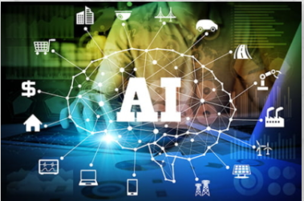

The AI segment is currently very fragmented, characterized with most companies focusing on silo approaches to solutions. Longer term, Mind Commerce sees many solutions involving multiple AI types as well as integration across other key areas such as the Internet of Things (IoT) and data analytics. Mind Commerce AI reports focus on solutions to specific problems, AI support of various apps and services, as well as AI integration with other technologies such as Big Data, IoT, and Blockchain. A sampling of Mind Commerce AI reports includes: Artificial Intelligence Market by Platforms, Components, Deployment Mode, Applications, and Industry Verticals Artificial Intelligence Impact on Public Safety, Security and Privacy Personal Artificial Intelligence and Robotics Market Outlook and Forecasts Virtual Personal Assistants: Artificial Intelligence Enabled Smart Advisors and Intelligent Agent Market Outlook and Forecasts Artificial Intelligence Convergence: AI in Analytics, Communications, Computing, IoT, Public Safety, Robotics, and Security AI in Internet of Things (IoT), Data Analytics, and Virtual Private Assistants Artificial Intelligence in Big Data Analytics and IoT: Market for Data Capture, Information and Decision Support Services Market for Artificial Intelligence in Internet of Things (IoT) Security and Fraud Prevention Chatbots and Artificial Intelligence: Market Assessment, Application Analysis, and Forecasts
There are many potential use cases for AI within the cybersecurity domain. For example, AI may be used in IoT to bolster security, safeguard assets, and reduce fraud. There are varying opinions about security in IoT. For example, some companies favor a distributed (decentralized) approach whereas other companies believe a more centralized approach leveraging strictly centralized cloud architecture makes more sense. Mind Commerce sees no way in which signature based security solutions will work with IoT in an edge computing environment for a variety of reasons including the limitation on throughput of communications between distributed end-points and centralized cloud.